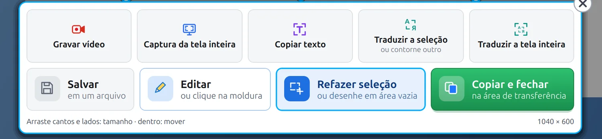
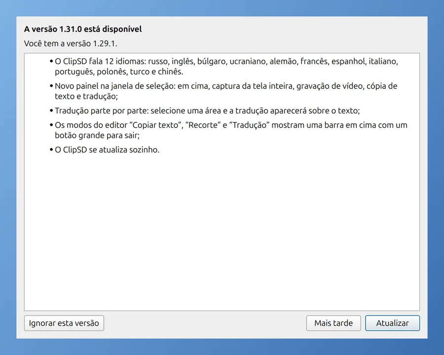

Histórico de versões
Versão 1.31.0
lançada em
- O ClipSD fala 12 idiomas: russo, inglês, búlgaro, ucraniano, alemão, francês, espanhol, italiano, português, polonês, turco e chinês. O idioma muda na hora, sem reiniciar: menu do ícone perto do relógio, globo no editor, primeiro passo do tour ou configurações.

- Novo painel na janela de seleção: em cima, captura da tela inteira, gravação de vídeo, cópia de texto e tradução; embaixo, “Editar”, “Salvar” e “Copiar e fechar”.

- Tradução parte por parte: selecione uma área e a tradução aparecerá sobre o texto; selecione a próxima e ela também será traduzida. Esc encerra o modo.

- Os modos do editor “Copiar texto”, “Recorte” e “Tradução” mostram uma barra em cima com um botão grande para sair; Esc traz de volta a ferramenta anterior.

- O ClipSD se atualiza sozinho. Uma vez por dia, verifica se há uma versão nova e oferece “Atualizar”, “Mais tarde” ou “Ignorar esta versão”. Para verificar agora: menu do ícone, “Verificar atualizações”. A atualização é verificada por meio de uma assinatura digital; se a versão nova não iniciar, a anterior volta.
